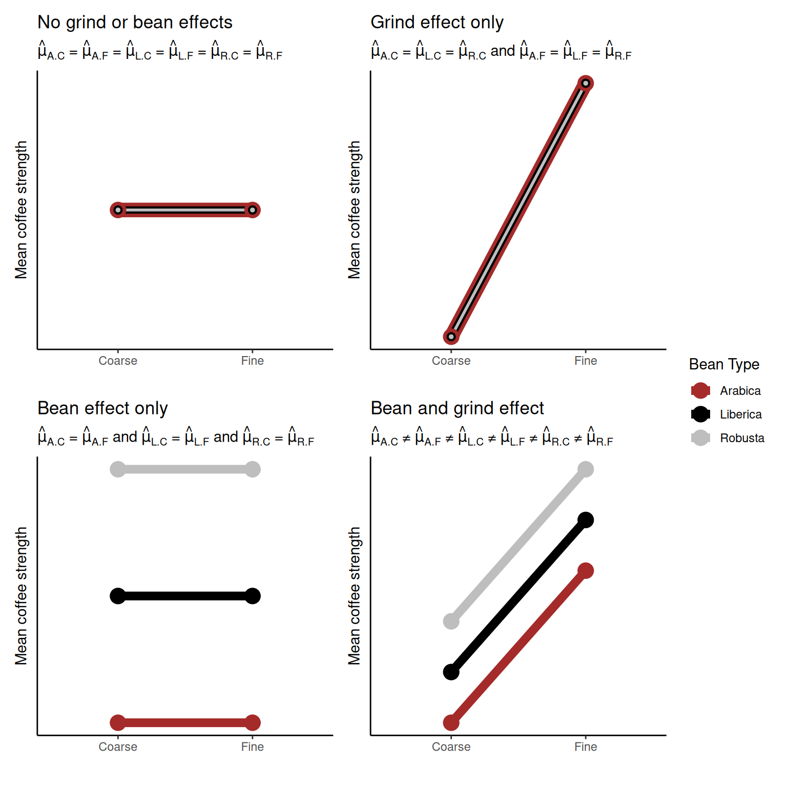
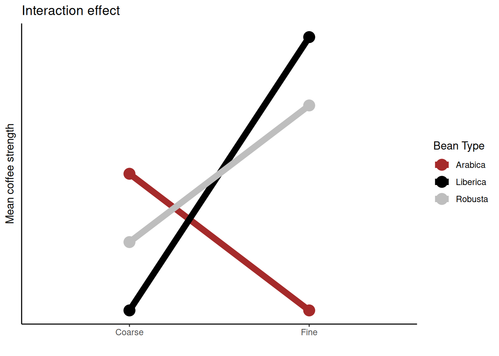

Chapter 4 Introduction to the design and analysis of experiments

Learning objectives
- Identify the following in a given experiment
- experimental unit
- observational units
- treatment(s)
- List and describe the three main principles of experimental design, specifically,
- randomization
- replication
- blocking
- Describe the layout and set-up of a CRD, RCBD, and a simple factorial experimental design
- Discuss and critique a given experimental design
- Identify sources of variation within a given experimental design
We now know how to deal with data in R; however, before we start drawing conclusions we need to know how the data were collected. Generally, data is either observational (data collected where researchers don’t control the environment, but simply observe outcomes) or experimental (data collected where researchers introduce some intervention and control the environment in order to draw inference).
Being able to design and critique appropriate experiments is a key skill for any budding biologist. But how do you start?
R. A. Fisher’s work in the area of experimental design is, perhaps, the most well known in the field. The principles he devised we still abide by today. Note, however, to give a balanced view of the celebrated mathematician many of his views (on eugenics and race in particular) are detested to many. I would urge you to read up on his work in this area and come to your own conclusions.
4.1 Introduction to experiments
“A useful property of a test of significance is that it exerts a sobering influence on the type of experimenter who jumps to conclusions on scanty data, and who might otherwise try to make everyone excited about some sensational treatment effect that can well be ascribed to the ordinary variation in [their] experiment.”
Key phrases
An experiment is a procedure (or set of actions) where a researcher intentionally changes some factor/treatment/variable to observe the effect of their actions. As mentioned above, the collection of observational data is not experimentation.
An experimental unit is the smallest portion of experimental material which is independently perturbed. This is the item under study for which some variable (treatment) is changed. For example this could be a human subject or an agricultural plot.
An observational unit (or subsample) is the smallest unit on which a response is measured. If the experimental unit is split after the treatment has been applied (e.g., multiple samples taken from one human subject) then this sample is called a subsample or observational unit. If one measurement is made on each experimental unit then the observational unit = the experimental unit. If multiple measurements are made on each subject (e.g., human) then each experimental unit has >1 observational unit. This is then pseudo- or technical replication (see below).
A treatment (or independent variable or factor or treatment factor) is an experimental condition independently applied to an experimental unit. It is one of the variables that is controlled by the researcher during the experiment (e.g., drug type). The values of the treatments within a set are called levels.
The dependent variable or response is the output (or thing) that is measured after an experiment. This is what the researcher measures and assesses if changing the treatment(s) (i.e., independent variable(s)) induces any change.
An effect is the change in the response variable caused by the controlled changes in the independent variable. Whether the magnitude of the effect (it’s size) is significant (or or any practical interest) is determined by the researcher after carrying out some appropriate analyses.
4.1.1 Setting up an experiment
In the previous chapter where we discussed Reproducibility. This also applies to the design and analysis of experiments. In order to future proof our research we should make every effort to ensure others can reproduce it. To do so we should be specific about our goals and procedures by
- Defining the goals/objectives of our research,
- Formulating a specific hypothesis,
- Specifying the response variable(s) that will be measured,
- Specifying the treatments that will be tested and describing the process of applying these treatments to the experimental units,
- Outlining the procedure for observing and recording responses to assess treatment effects,
- Identifying factors that may contribute to variability in the results (expected and otherwise), and
- Describing the statistical or methods that will be employed to the our hypothesis.
Following these guidelines not only helps our experiment, but makes sure others can reproduce it. For example, defining specific objectives directs you towards writing focused statements about the investigative questions you want your experiment to answer. Listing the experimental factors (or treatments or independent variables) you will study in your experiment helps to organize variables and work out how they may help to explain observed changes in your measurable response(s). It is important that the experimental factor can be controlled during and between experimental runs. Variables that are thought to affect the response, but cannot be controlled, cannot be included as an experimental factor.
An example
| Experiment Title | Barista Brews |
|---|---|
| Researcher Name | Dr Java |
| Researcher Institute | Central Perk |
| Objective | The objective of this experiment is to determine what type of grind and brew ratio (i.e., amount of coffee in relation to water) leads to the strongest coffee. |
| Hypothesis | That a finer grained coffee with a higher brew ratio (i.e., less water to coffee) will lead to the strongest coffee. |
| Response variable | Total Dissolved Solids (TDS), a measure of soluble concentration (%). |
| Treatments | - Brew ratio - 2 parts coffee to 1 part water (2-1) - 1 part coffee to 1 part water (1-1) - 1 part coffee to 2 parts water (1-2) - Grind - Fine - Coarse |
| Experimental material | Individual cups, maintaining consistency in cup size, water amount, and boiling temperature. |
| How treatments will be applied | Independently to individual cups. Each cup will be made independently, not as a batch distributed among several cups. |
| How measurements will be taken | Treatments applied independently to individual cups. Each cup with the same treatment (brew ratio and grind) will be subject to the same environmental conditions. |
| Experimental units | Replicate each treatment twice. Assign 2 experimental units (cups) to each unique treatment combination. |
4.2 The three (main) principles of experimental design
- Replication
Repeating an experiment means that you can assess the consistency and reliability of any observed effects. If you observe the effect repeatedly is less likely that it occurred simply due to random variation. There are many ways replication can be included in an experiment. What you repeat (e.g., treatments or measurements) depends on what effect or source of variation you wish to investigate. The table below summarizes, perhaps, the three most commonly employed types of replication.
| Replication Type | Description | Why |
|---|---|---|
| Biological Replication | Each treatment is independently applied to several humans, animals, or plants. | To generalize results to the population. |
| Technical Replication | Two or more samples from the same biological source independently processed. | Advantageous if processing steps introduce a lot of variation; increases precision in comparing relative abundances between treatments. |
| Pseudo-replication | One sample from the same biological source divided into two or more aliquots independently measured. | Advantageous for noisy measuring instruments; increases precision in comparing relative abundances between treatments. |
- Randomization
Employing randomization in your experiment goes towards ensuring the validity, reliability, and generalizability of your results. The main reason to randomize allocation of treatment to experimental units is to protect against bias. We, typically, wish to plan the experiment in such a way that the variations caused by extraneous factors can all be combined under the general heading of “chance”. Doing so ensures that each treatment has the same probability of getting good (or bad) units and thus avoids systematic bias. Random allocation can cancel out population bias; it ensures that any other possible causes for the experimental results are split equally between groups. Hence, by creating comparable treatment groups through random assignment we can minimize bias, increase validity and genralizability of the results.
Typically statistical analysis assumes that observations are independent. This is almost never strictly true in practice but randomization means that our estimates will behave as if they were based on independent observations. Randomization is also useful in situations where we may be are unaware of all potential variables as it is more likely to distribute the effects of unknown factors evenly. In addition, randomizing treatment allocation can aid in the ethical conduct of our research as it promotes fair distribution of benefits and risks among participants.
- Blocking
Blocking helps control variability by making treatment groups more alike. Experimental units are divided into subsets (called blocks) so that units within the same block are more similar (homogeneous) than units from different subsets or blocks. The experiment is then conducted separately within each block. Blocking is a technique for dealing with nuisance factors, a factor that has some effect on the response, but is of no interest. By grouping similar units together in blocks we reduce the effect of the nuisance factors, which can improve the precision of our estimates (magnitude of effects). In addition, blocking helps prevent confounding by controlling the impact of known or suspected sources of variation.
Let’s briefly delve into the realms of fantasy3. The fantastical example we consider is set at Basgiath College where students are trained to serve the Empire. Students are either trained as Riders or Scribes entering the respective Quadrant. Along comes a new Professor, Professor Llewelyn, who thinks that their new dragon-riding coaching technique is guaranteed to result in huge improvements in a student’s dragon-riding ability. They conduct an experiment comparing the new and old coaching techniques.
To conduct their experiment they use a mix of students from the two different Quadrants: Riders (who have been riding dragons all their lives) and Scribes (who have never ridden a dragon before). Before any coaching is given all students are asked to complete a dragon assault course whilst atop a dragon, which is timed. Then, over a few months, each student randomly receives one of the coaching techniques (i.e., new or old). After this, the students are asked to complete another assault course of similar difficulty and their time is again recorded. Their improvement (if any) in dragon riding is measured by the difference between the two times.
However, the huge variation in baseline riding ability between these two groups (i.e., Riders are obviously going to be much better at riding dragons than Scribes) will obfuscate/obscure any improvement the new teaching technique may induce. Therefore, to find out if the new dragon-riding coaching technique works Professor Llewelyn blocks by Quadrant setting up the experiment as follows.
| Title | |
|---|---|
| Objective of experiment | Examine the impact of a new dragon riding coaching technique |
| Primary Variable of Interest | Improvement in dragon riding (difference between assult course completion times) |
| Nuisance Factors Introducing Variability | Quadrant (i.e., Riders or Scribes) |
| Blocking | We use blocking based on Quadrants to control for variability introduced by the differences among Riders and Scribes |
| Experimental Units | Students are the experimental units |
| Blocking Procedure | 1. Identify Quadrant of student (i.e., Rider or Scribe). 2. Create Blocks: Group students based on Quadrant. 3. Random Assignment within Blocks: Randomly assign students to different coaching techniques (i.e., old and new). This ensures each technique (e.g., old and new) is tested with different Quadrant. |
| Experimental Setup | Each block (representing a Quadrant) contains a random assignment of students receiving different dragon riding coaching. |
| Benefits of Blocking | By using blocking based on Quadrant, the experiment controls for potential variations dragon riding improvement caused by the baseline differences in a student’s dragon riding ability due to their Quadrant. This enhances the precision of the experiment and allows for a more accurate assessment of the impact of the coaching on dragon riding skill. |
| Example Outcome | After the experiment, researchers analyze dragon riding improvement separately for each Quadrant, drawing conclusions about the technique’s effectiveness within specific Quadrants while minimizing the influence of Quadrant on the overall results. |
4.3 Experimental designs
4.3.1 Completely randomised design (CRD)
Let’s consider a completely randomized design with one treatment factor (e.g., coffee bean type). Here, \(n\) experimental units (e.g., cups) are divided randomly into \(t\) groups. Random allocation can be achieved by simply drawing lots from a hat! To be more rigorous, though, we could use R’s sample() function (have a go yourself and see if you can work out how to wield sample()). Each group is then given one treatment level (one of the treatment factors). As we have defined only one treatment factor all other known independent variables are kept constant so as to not bias any effects.

An illustration of a CRD with one tratment factor and three treatment levels (A, B, & C)
Designing a CRD using R
Here we’re going to use R to do the random allocation of treatments for us.
## create a character vector of bean types
beans <- rep(c("Arabica","Liberica", "Robusta"), each = 4)
beans
## [1] "Arabica" "Arabica" "Arabica" "Arabica" "Liberica" "Liberica"
## [7] "Liberica" "Liberica" "Robusta" "Robusta" "Robusta" "Robusta"
## randomly sample the character vector to give the order of coffees
set.seed(1234) ## this is ONLY for consistency, remove if doing this yourself
allocation <- sample(beans, 12)
allocation
## [1] "Robusta" "Robusta" "Liberica" "Liberica" "Arabica" "Liberica"
## [7] "Arabica" "Robusta" "Arabica" "Liberica" "Robusta" "Arabica"Having run the code above your CRD plan is as follows
| Cup | 1 | 2 | 3 | 4 | 5 | 6 | 7 | 8 | 9 | 10 | 11 | 12 |
| Bean | Robusta | Robusta | Liberica | Liberica | Arabica | Liberica | Arabica | Robusta | Arabica | Liberica | Robusta | Arabica |
R code above, but this time choose a different random seed by choosing a different number in this line of code set.seed(1234). What is your CRD plan? Why might keeping the random seed be important?
4.3.2 Randomised complete block design (RCBD)
Let’s consider a randomized complete block design with one treatment factor (e.g., coffee bean type). If the treatment factor has \(t\) levels there will be \(b\) blocks that each contain \(t\) experimental units resulting in a total of \(t\times b\) experimental units. For example, let’s imagine that for the coffee experiment we had two cup types: mugs and heatproof glasses. We might consider the type of receptacle to have an effect on the coffee strength measured, however, we are not interested in this. Therefore, to negate this we block by cup type. This means that any effect due to the blocking factor (cup type) is accounted for by the blocking.
For a blocked design we want the \(t\) experimental units within each block should be as homogeneous as possible (as similar as possible, so that there is unlikely to be unwanted variation coming into the experiment this way). The variation between blocks (the groups of experimental units) should be large enough (i.e., blocking factors different enough) so that conclusions can be drawn. Allocation of treatments to experimental units is done randomly (i.e., treatments are randomly assigned to units) within each block.

An illustration of a CRD with one tratment factor, three treatment levels (A, B, & C), and three blocks (rows)
Designing a RCBD using R
Let’s assume you want to set up an experiment similar to the CRD one above; however, now you are in the situation where you have two types of cups (mugs and heatproof glasses). Below we use R to do the random allocation of treatments within each block (cup type) for you.
Here we have \(t = 3\) treatments (bean types) and \(b = 2\) blocks (cup types) so we will have \(t \times b = 6\) experimental units in total.
set.seed(4321) ## this is ONLY for consistency, remove if doing this yourself
plan <- data.frame(Beans = rep(c("Arabica","Liberica", "Robusta"), times = 2),
Block = rep(c("Mug", "Glass"), each = 3)) %>% ## combine experiment variables
group_by(Block) %>% ## group by blocking factor
dplyr::sample_n(3)
plan
## # A tibble: 6 × 2
## # Groups: Block [2]
## Beans Block
## <chr> <chr>
## 1 Arabica Glass
## 2 Liberica Glass
## 3 Robusta Glass
## 4 Liberica Mug
## 5 Arabica Mug
## 6 Robusta MugHaving run the code above your RCBD plan is as follows
| Receptacle | 1 | 2 | 3 | 1 | 2 | 3 |
| Beans | Arabica | Liberica | Robusta | Liberica | Arabica | Robusta |
| Block | Glass | Glass | Glass | Mug | Mug | Mug |
R code above, but this time choose a different random seed by choosing a different number in this line of code set.seed(4321). What is your CRD plan? Why might keeping the random seed be important?
4.3.3 Factorial design
A factorial experiment is one where there are two or more sets of (factor) treatments4. Rather than studying each factor separately all combinations of the treatment factors are considered. Factorial designs enable us to infer any interaction effects, which may be present. An interaction effect is one where the effect of one variable depends on the value of another variable (i.e., the effect of one treatment factor on the response variable will change depending on the value of a second treatment factor.)
Let’s consider Dr Java’s experiment above. Here, Dr Java wants to study all combinations of the levels of each factor. Their objective is to determine what type of grind and brew ratio (i.e., amount of coffee in relation to water) leads to the strongest coffee.
Possible outcomes

4.3.3.1 Interactions
If an interaction effect exists the effect of one factor on the response will change depending on the level of the other factor.

The plot above is called an interaction plot. Creating such a plot is often very useful when drawing inference; in this instance we can see that the strength of the coffee changes depending on the type of coffee bean used, however, this relationship differs depending on the type of grind used. For example, Liberica beans produce stronger coffee than the other two beans when the fine grind is used, but weaker coffee when the coarse grind is used.
Designing factorial experiment using R
Here we use the R package edibble which is specifically designed to aid in the planning and designing of experiments.
library(edibble) ## you will need to install this package first
## Factorial design (Brew and Grind)
design("Barista Brew: Factorial Design") %>%
set_units(cup = 12) %>% # 2*2*3
set_trts(BrewRatio = c("2-1", "1-1", "1-2"),
Grind = c("Fine", "Coarse")) %>%
allot_trts(~cup) %>%
assign_trts("random", seed = 836) %>% ## the random seed for random allocation
serve_table()
## # Barista Brew: Factorial Design
## # An edibble: 12 x 3
## cup BrewRatio Grind
## <U(12)> <T(3)> <T(2)>
## <chr> <chr> <chr>
## 1 cup01 1-2 Fine
## 2 cup02 2-1 Coarse
## 3 cup03 1-1 Fine
## 4 cup04 2-1 Coarse
## 5 cup05 1-2 Coarse
## 6 cup06 1-1 Coarse
## 7 cup07 1-2 Fine
## 8 cup08 1-1 Fine
## 9 cup09 1-2 Coarse
## 10 cup10 1-1 Coarse
## 11 cup11 2-1 Fine
## 12 cup12 2-1 FineR code above, but this time choose a different random seed (by changing seed = 836). What is your design? Now increase the number of replications, use your R skills to figure out what line of code needs changing here. What is your design now?
Other resources: optional but recommended
- Glass, David J. Experimental Design for Biologists. Second ed. 2014. Print.
- Welham, S. J. Statistical Methods in Biology : Design and Analysis of Experiments and Regression. 2015. Print.
- Fisher, Ronald Aylmer. The Design of Experiments. 8th ed. Edinburgh: Oliver & Boyd, 1966. Print. O & B Paperbacks.
- Lawson, John. Design and Analysis of Experiments with R. Vol. 115. CRC press, 2014.
A realm based on that in the Fourth Wing.↩︎
Note is a factorial design has equal numbers of replicates in each group then it is said to be a balanced design; if this is not the case then it is unbalanced.↩︎